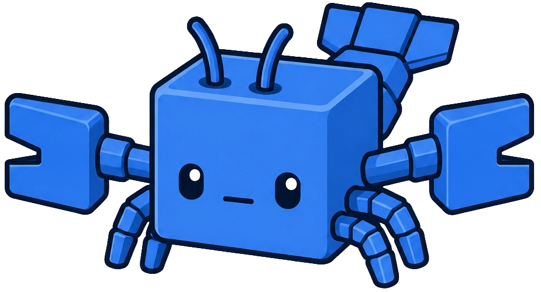

Your team's AI agents. Sandboxed. Audited. In your cluster.
A Kubernetes operator that runs Slack-triggered AI agents in one-shot, scale-to-zero pods — with a real secret authority, human-approved credential access, and a control plane that updates itself.
$ curl -fsSL https://kube-claw.com/install.sh | bash # @mention the bot in Slack — you're live.
Personal AI-agent frameworks are great — for one person on one machine. kube-claw is what you run when the whole team wants agents in Slack, and security wants answers.
| Personal agent frameworks | kube-claw | |
|---|---|---|
| Runs on | Your laptop / a VM | Any Kubernetes cluster (GKE Autopilot to k3d) |
| Isolation boundary | A local container | A one-shot K8s Job pod: non-root, dropped caps, optional egress deny, scale-to-zero |
| Credentials | Env vars / mounted files | Encrypted secret authority — PAM-style Slack approval, one-time intake links, never in model context or logs |
| Users | You | Every channel in your workspace, with per-channel behavior |
| Upgrades | git pull | Self-updating: release detected → Slack prompt → digest-pinned apply → auto-rollback watchdog |
| Audit trail | Shell history | Hash-chained audit log + full conversation history in the admin dashboard |
💛 Credit where due: kube-claw was inspired by nano-claw's container-per-agent idea — rebuilt as a Kubernetes-native control plane for teams. If you want a personal agent you can read in an afternoon, use nano-claw. If you want the team version with a secret authority, you're home.
Mention the bot, get a sandboxed agent. Everything else — credentials, routing, upgrades, audit — is the control plane's job, not yours.
Add the bot to a channel and it configures itself — @-mention-only, replies in threads, by default. It answers in-thread, stays warm for follow-ups, and knows the difference between a thread it started and one it was pulled into.
Every task runs in its own Kubernetes Job: non-root, all capabilities dropped, seccomp, writable workspace, scale-to-zero when idle. The pod is the security boundary.
Credentials are encrypted at rest, bound to agent + image, and released only after a human approves in Slack. Values arrive via one-time links — never typed into chat, never in the model's context, never in logs.
Each agent carries its own base image and editable prompt. A fast classifier reads the request and dispatches to the best fit — cloud-ops asks land on the agent with the cloud SDKs.
A tiny supervisor watches signed release manifests. New version → Slack prompt to your
upgrade admin → digest-pinned apply → a watchdog confirms startup or rolls back. The install is
the last helm upgrade you run by hand.
A hash-chained, tamper-evident audit log; full conversation history; secrets you can rotate but never view — all in a self-hosted admin dashboard with zero build steps.
Cron-triggered runs for standing jobs — the morning cost report posts itself.
Agents publish design docs and reports as time-bound share links — content stays in your cluster, links expire, reshares revoke old ones.
Two small CRDs, one controller, one supervisor. Boring Go you can audit.
Slack (Socket Mode) │ @mention / thread reply / approval click ▼ claw-controller ── router · secret authority · run engine · admin UI · API │ │ │ └── SQLite store (PVC): runs · secrets (encrypted) · audit (hash-chained) ▼ run Jobs (agents namespace) one pod per task · non-root · scale-to-zero └── claw-runner: Claude tool-use loop · /login attestation · secret materialize claw-supervisor ── polls release manifest · renders controller StatefulSet ▲ │ digest-pinned applies · startup watchdog · auto-rollback │ ▼ └── ControlPlane CRD spec = policy (Helm) · annotations = approvals · status = state
One StatefulSet: Slack router, secret authority, run engine, HTTP API, and the admin dashboard. State in SQLite on a PVC — no external database to run.
Published base images (general-purpose, gcloud, aws, azure) or your own. The runner attests its pod identity before it can materialize an approved credential.
Envelope-encrypted values, granter-checked approvals, on-demand access requests with reasons, revocation that blocks the next run.
Deliberately tiny and boring: it owns the controller StatefulSet, applies releases by digest, and rolls back anything that doesn't confirm startup — even a bad Helm-driven change.
Don't reinvent isolation — use the scheduler, the namespace, the NetworkPolicy, the Job.
If a credential ever appears in Slack, the model's context, or a log line, that's a bug — by design, not by policy.
Approvals are digest-pinned at click time: what you approved is exactly what runs. No tag TOCTOU, no drift.
Upgrades, rollbacks, and release announcements are product features, not runbooks.
Two CRDs, a pluggable store, server-rendered HTML. No message bus, no microservice zoo, no JS build step.
Channels, upgrade admins, management-channel announcements, break-glass CLI — multiplayer from day one.
You need: an authenticated kubectl pointed at any cluster,
helm, a Slack app (Socket Mode), and an Anthropic API key. No Docker build —
images come from Docker Hub.
$ curl -fsSL https://kube-claw.com/install.sh | bash # prompts for Slack tokens, Anthropic key, admin password — # keys land in K8s Secrets, never in Helm values or history. ✓ control plane rolled out — admin URL + password printed
Then add the bot to a Slack channel — it introduces itself and just works (@-mentions, replies in threads). Standing up a fresh GKE Autopilot cluster end-to-end? See docs/deploy-gke.md.
Prefer plain Helm (or want to read the script first)? The chart is self-contained —
CRDs included, release signatures verified out of the box:
helm install claw oci://registry-1.docker.io/bitwavecode/claw -n claw-system --create-namespace
nano-claw is a personal agent framework — a codebase small enough to read, running containers on your machine, for you. kube-claw takes the same container-per-agent conviction to the team setting: a Kubernetes control plane, a secret authority with human approvals, per-channel Slack behavior, audit trails, and a self-updating release train. Different job, shared soul.
Install-time keys (Slack, Anthropic) are Kubernetes Secrets — never in Helm values or release history. Agent credentials live envelope-encrypted in the controller's store, are released to a pod only after a granter approves, arrive via one-time links, and can be rotated (never viewed) from the dashboard.
Its own pod: non-root, all capabilities dropped, seccomp, a writable workspace, and optional east-west egress deny. A credential is bound to the agent and image it was approved for, and the runner must attest its pod identity to materialize it. Revocation blocks the next run.
A supervisor polls the release manifest (optionally ed25519-signed, fail-closed). In
prompt mode your upgrade admin gets a Slack DM with the release notes; approval
applies the exact digests from the manifest; a watchdog waits for the new version to confirm
startup and rolls back if it doesn't. auto and manual modes exist too,
and a management channel can get all announcements.
Anthropic Claude — a tool-use loop in the runner, with a fast Haiku classifier doing message gating and agent routing. Each agent's system prompt is editable live from the dashboard.
No. It runs on GKE Autopilot and on a laptop k3d. The controller requests 250m CPU / 512Mi; the supervisor 50m / 64Mi; agent pods scale to zero when idle.
AGPL-3.0. Run it, read it, fix it — and share your changes if you host it for others.